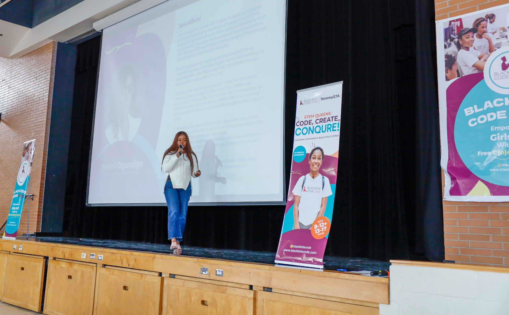

Jesunifemi Ogundipe · Speaking
Ideas with intellectual weight and human consequence.
World-class keynotes and leadership engagements for institutions shaping the future of work, education, human capital and public life.

Speaking themes
The room should leave with language for what matters.
Every engagement combines rigorous thought, emotional clarity and an institutionally relevant call to action.
Sample topics
Built for leaders and institutions.
Clarity as Infrastructure
Why clear identity, belonging and agency are foundational to leadership, learning and national development.
Belonging & Human Capital
How institutions convert human potential into contribution by designing for dignity, voice and ownership.
Leadership & Emotional Intelligence
The internal capacity leaders need to regulate pressure, make sound decisions and shape healthier systems.
The Future of Work
Why technology strategy fails without the human architecture required for adaptation, meaning and performance.
Identity & Performance
The link between self-understanding, decision quality, confidence, ownership and sustained excellence.
Excellence by Design
How ambitious professionals translate capability into authority, positioning and visible contribution.
Engagements
A format for every consequential room.
Keynotes
High-impact thought leadership for conferences, summits, universities and executive audiences.
Leadership sessions
Facilitated experiences that move from insight to reflection, dialogue and application.
Advisory conversations
Private or public executive discussions on clarity, leadership, identity and institutional performance.